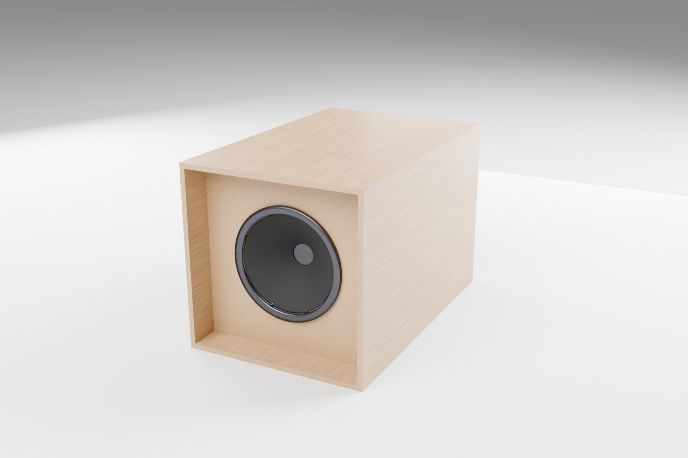

Build
The cabinet is flat birch-ply panels. The round parts are 3D printed. Everything here comes from the
CAD in cad/, which is generated from the same design file as the simulations.


Bill of materials
| Item | Qty | Notes |
|---|---|---|
| 18Sound 15W500, 8 ohm | 1 | Low. Rear-mounted, motor forward |
| PRV 6MR600X-NDY, 8 ohm | 1 | Mid, 6 inch |
| Fostex T925A, 8 ohm | 1 | Bullet tweeter |
| Birch ply 18 mm | About 3.6 m² | Two 2440 x 1220 sheets with offcuts |
| Birch ply 25 mm, or two layers of 12 mm | 600 x 600 | Baffle |
| Birch ply 12 mm | About 0.3 m² | Corner filler faces and ribs |
| Aluminium tube, 12 mm OD, 10 mm bore | 4 x 145 mm | Mid can supports; the top one carries the cables |
| PETG or ASA filament | About 3 kg | Printed parts, see below |
| M6 threaded inserts and M6 x 30 bolts | 8 | 15 inch, fitted from the chamber side |
| M4 heat-set inserts and M4 x 16 screws | 8 | Mid driver into the mid horn, tail into sleeve |
| Speaker cable, 2 x 1.0 mm² | About 3 m | Two pairs for mid and tweeter, one for the low |
| Terminal cup, 4 pole or two 2 pole | 1 | Back panel, one pair per amplifier channel |
| Polyester wadding, 25 mm | 0.5 m² | Rear chamber, lightly |
| Foam gasket tape, 3 mm | 2 m | 15 inch flange, mid driver flange, back panel |
| PU glue, wood glue, 2-part epoxy, silicone | ||
| 3-way DSP crossover and 3 amplifier channels | per speaker | LR4 filters, delay, gain, limiter |
Cut list
| Part | Qty | Size (mm) | Ply (mm) | Notes |
|---|---|---|---|---|
| Sides, left and right | 2 | 636 x 982 | 18 | Square edges |
| Top and bottom | 2 | 600 x 982 | 18 | Fit between the sides |
| Back | 1 | 600 x 600 | 18 | Terminal cup, 4 pole |
| Baffle | 1 | 600 x 600 | 25 | 353 mm hole, 8 x M6 inserts (baffle.dxf) |
| Horn walls | 4 | Trapezoid 360 to 600 wide, 858 long (inner face) | 18 | Long edges bevelled 44.4 deg, ends 8.0 deg (horn_wall_inner_face.dxf) |
| Corner filler faces | 4 | Triangle, base 149, height 884 | 12 | Three ribs each behind the face |
DXF flat patterns: horn wall, baffle. The horn walls are dimensioned on their inner face. Cut the trapezoid, then bevel the two long edges at 44.4 degrees so neighbours meet in a mitre, and the two short edges at 8.0 degrees so the throat end sits flat on the baffle and the mouth end is flush with the front.
Printed parts
| Part | File | Size (mm) | Est. mass (kg) |
|---|---|---|---|
| Mid horn and cone lead-in | mid_horn.stl | 302 x 302 x 272 | 6.31 |
| Mid driver sleeve | mid_sleeve.stl | 302 x 302 x 87 | 5.45 |
| Mid rear cap and tail | mid_tail.stl | 302 x 302 x 138 | 2.23 |
| Tweeter sleeve, nose and vanes | phase_plug.stl | 118 x 110 x 150 | 0.31 |
| 15 inch nose cone | low_nose.stl | 180 x 180 x 145 | 0.96 |
Print in PETG or ASA, 0.2 mm layers. Use four or more perimeters on every acoustic surface. Print the mid horn mouth-down and the tail point-up. Before printing, check two dimensions that came from datasheet drawings, not measurements:
- The motor diameter of your 18Sound 15W500. The nose cone assumes 180 mm and has a 20 mm bore to keep the pole vent open.
- The cone profile of your PRV 6MR600X-NDY. The lead-in in
mid_hornassumes a straight cone and leaves 1.5 mm. Confirm the clearance with modelling clay before gluing anything. - Your Fostex T925A's body. The sleeve in
phase_plugis bored to 83 mm for a 82 mm body.
Add two features in your slicer or CAD before printing, because the generated parts leave them out:
- A 6 mm cable channel inside the top wall of
mid_horn, from the top rod hole back to the sleeve. - A 4 mm channel along the top vane of
phase_plugfor the tweeter pair.
Assembly
- Carcass. Glue the sides, top and bottom around the back panel. Fit the baffle 89 mm in front of the back panel's inner face. That gap is the 35 litre sealed chamber, including the volume inside the cone. Seal every joint. Add two dowel braces between baffle and back.
- 15 inch. Before the back goes on, pass the 15 inch motor-first through the baffle cutout from the chamber side. The flange sits on the back face of the baffle, on gasket tape, held by eight M6 bolts into inserts. Wire it red to positive.
- Nose cone. Bond the printed nose to the back plate with silicone so it can be removed. Keep the bore clear.
- Damping and back. Line the back panel lightly with wadding, keeping it off the cone. Fit the terminal cup, run the low pair, and glue the back on.
- Horn walls. Dry-fit the four bevelled walls: their throat ends rest on the baffle around the octagon and their mouth ends meet the inner faces of the box at the front. Glue and pin. The voids behind them are sealed. Filling them with sand or foam is optional.
- Corner fillers. Glue the triangular faces into the four corners on their ribs, wide end at the baffle, point at the mouth corner. Fill and paint the inside of the horn.
- Mid can. Slide the Fostex T925A into the phase-plug sleeve, face flush with its front, and run its pair through the top vane. Key the three vanes into the mid horn throat: the tweeter face ends up 130 mm in front of the throat. Fit the mid driver to the back of the mid horn, then the sleeve and the tail. Pass both pairs into the top rod hole.
- Supports. Drill the four horn walls at 686 mm from the cone rim, on the centre lines. Push the rods through into blind holes in the mid can, centre the can with its front flush with the mouth, and epoxy. Run the cables out of the top rod through the void, through a sealed hole in the baffle, and to the terminal cup.
- Set up the DSP. Start from the simulated settings. On the low channel add a second-order high-pass at 60 Hz and a limiter set from the excursion plot in the low horn section.
- Measure. Measure each section alone at 1 m on axis and at 30 degrees, then the crossovers. Adjust the delays for the deepest null with one section inverted, then restore polarity. Compare the result with the simulated data.
